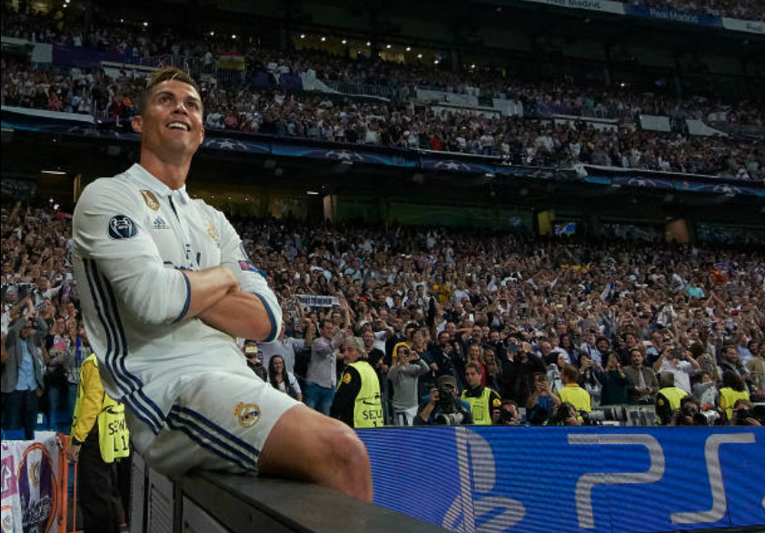

The Greatest Footballer of All Time.
Cristiano Ronaldo
Cristiano Ronaldo is widely regarded as the best due to his unmatched consistency, having scored over 850 career goals and dominating at the highest levels for nearly two decades. His ability to perform in crucial moments, whether in Champions League finals or World Cup qualifiers, sets him apart from others. Beyond his physical talent, Ronaldo's relentless work ethic and adaptability across leagues and teams make him a truly legendary figure in football. Here are some other sites that agree with me: Real Madrid His official fan page fan page
Cristiano Ronaldo - Career Stats and Awards
Career Stats
- Appearances: 1100+
- Goals Scored: 850+
- Assists: 230+
- Clubs: Sporting CP, Manchester United, Real Madrid, Juventus, Al-Nassr
- National Team: Portugal
- International Goals: 130+
Key Awards
- Ballon d'Or Wins: 5
- Champions League Titles: 5
- European Championship: 1 (2016)
- UEFA Nations League: 1 (2019)
- Golden Boot: 4 (Top scorer in Europe)
- Domestic League Titles: 7 (England, Spain, Italy)